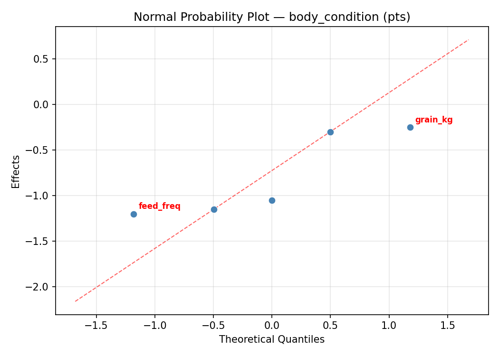
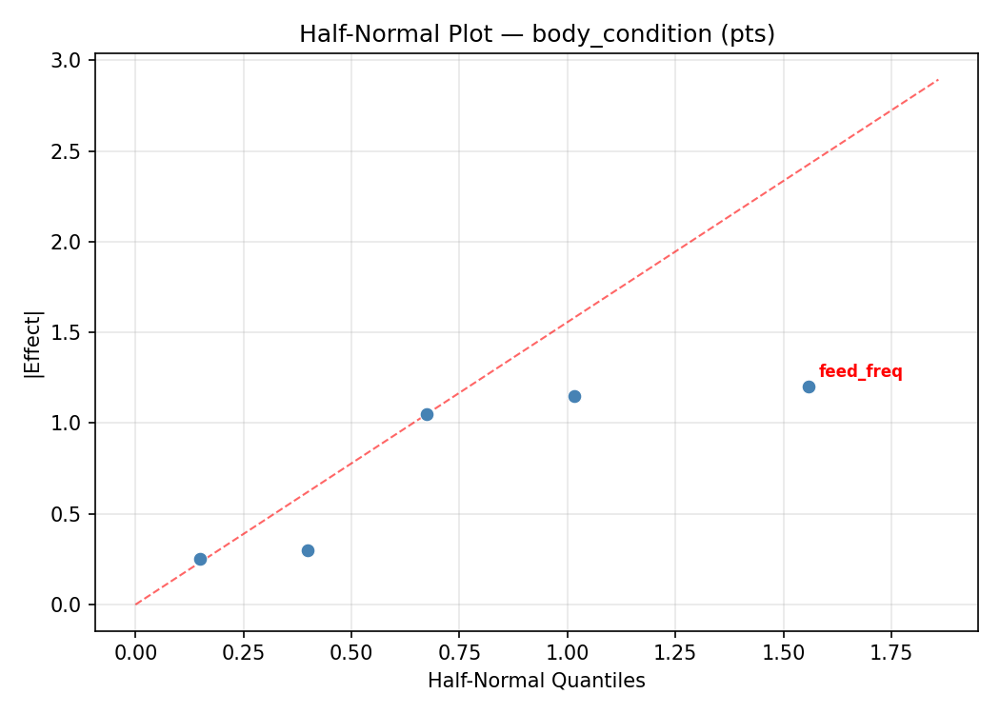
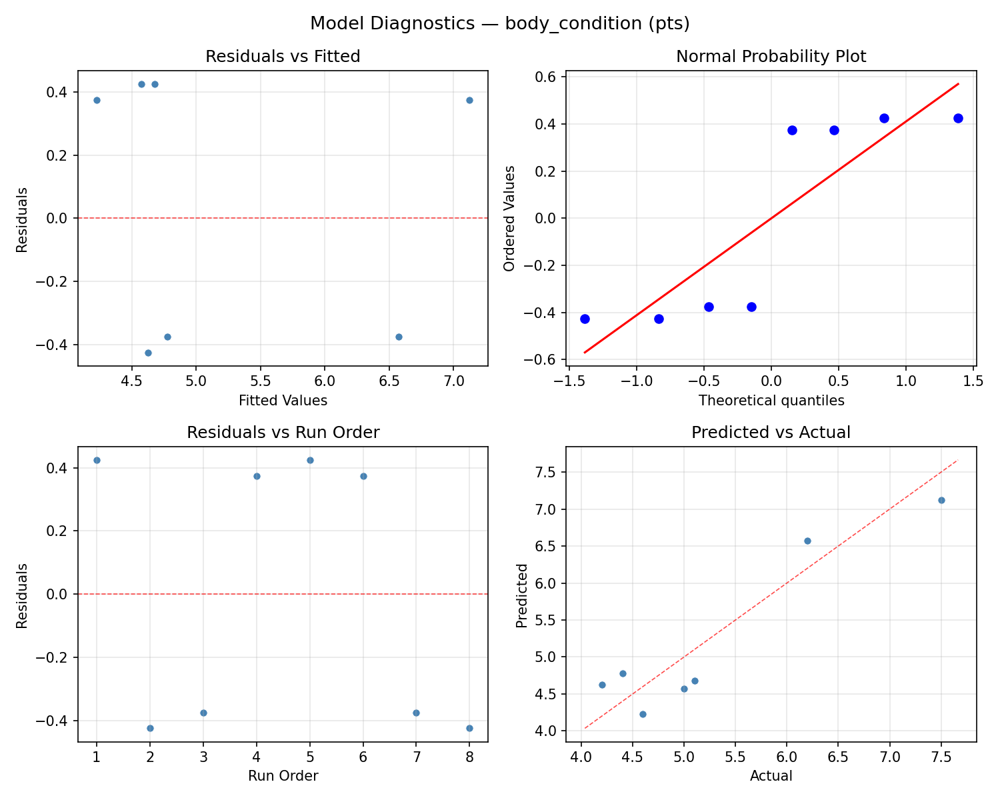
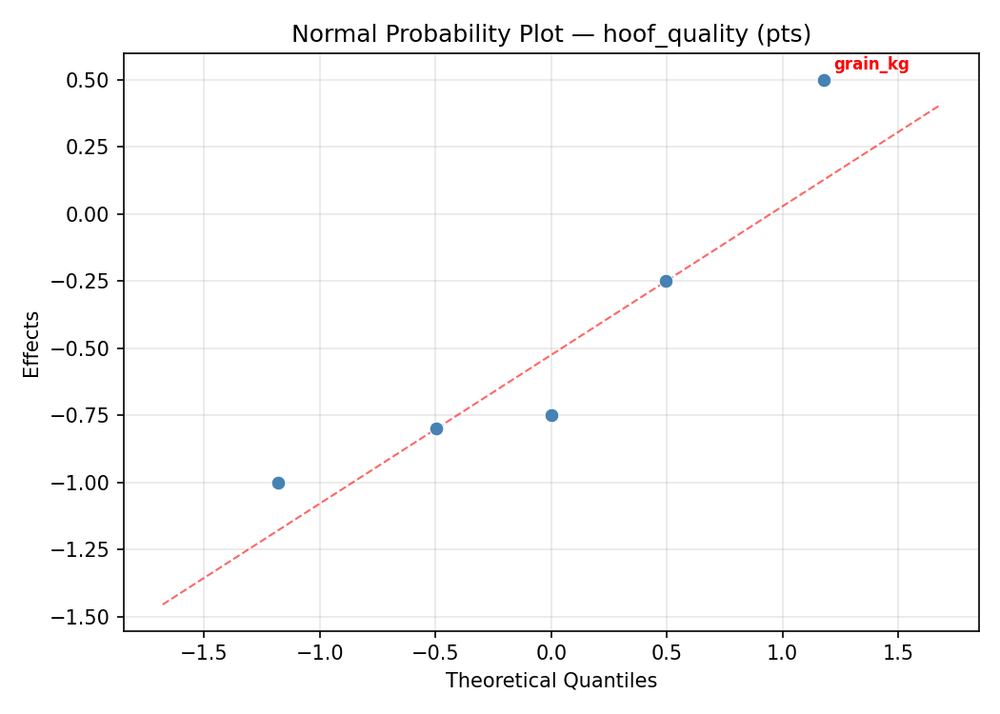
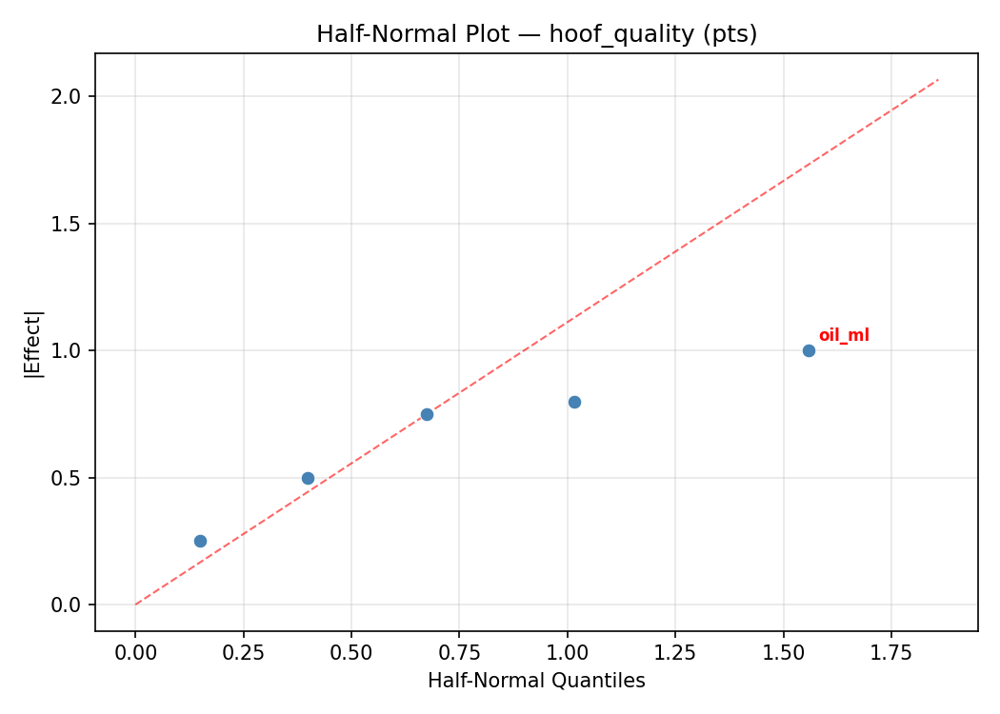
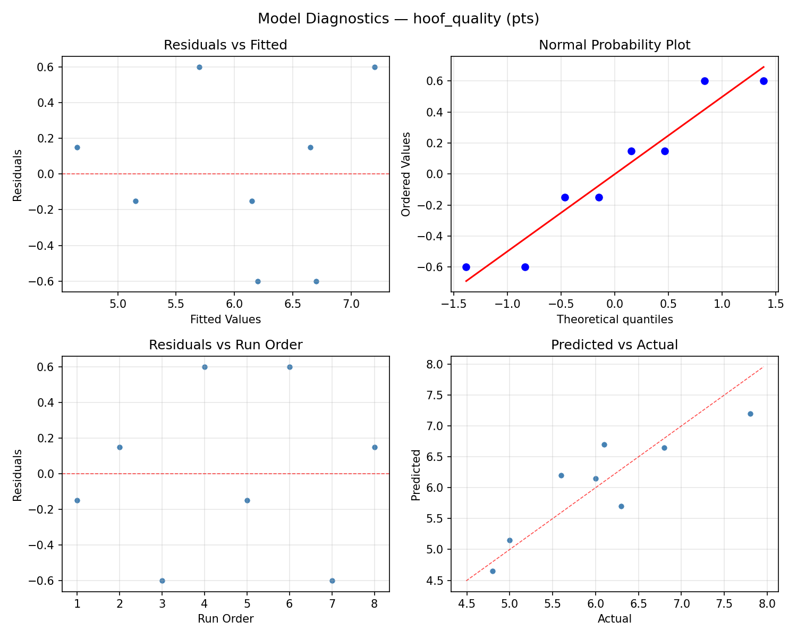

Summary
This experiment investigates horse feed ration balance. Fractional factorial screening of hay ratio, grain amount, mineral supplement, oil supplement, and feeding frequency for weight maintenance and hoof quality.
The design varies 5 factors: hay kg (kg/day), ranging from 6 to 12, grain kg (kg/day), ranging from 1 to 5, mineral g (g/day), ranging from 30 to 90, oil ml (mL/day), ranging from 0 to 120, and feed freq (per_day), ranging from 2 to 4. The goal is to optimize 2 responses: body condition (pts) (maximize) and hoof quality (pts) (maximize). Fixed conditions held constant across all runs include horse weight = 500kg, activity = moderate.
A fractional factorial design reduces the number of runs from 32 to 8 by deliberately confounding higher-order interactions. This is ideal for screening — identifying which of the 5 factors matter most before investing in a full study.
Key Findings
For body condition, the most influential factors were feed freq (38.9%), oil ml (34.7%), mineral g (16.7%). The best observed value was 7.5 (at hay kg = 6, grain kg = 1, mineral g = 90).
For hoof quality, the most influential factors were hay kg (38.5%), feed freq (38.5%), mineral g (11.5%). The best observed value was 7.8 (at hay kg = 6, grain kg = 1, mineral g = 90).
Recommended Next Steps
- Follow up with a response surface design (CCD or Box-Behnken) on the top 3–4 factors to model curvature and find the true optimum.
- Consider whether any fixed factors should be varied in a future study.
- The screening results can guide factor reduction — drop factors contributing less than 5% and re-run with a smaller, more focused design.
Experimental Setup
Factors
| Factor | Low | High | Unit |
|---|
hay_kg | 6 | 12 | kg/day |
grain_kg | 1 | 5 | kg/day |
mineral_g | 30 | 90 | g/day |
oil_ml | 0 | 120 | mL/day |
feed_freq | 2 | 4 | per_day |
Fixed: horse_weight = 500kg, activity = moderate
Responses
| Response | Direction | Unit |
|---|
body_condition | ↑ maximize | pts |
hoof_quality | ↑ maximize | pts |
Configuration
{
"metadata": {
"name": "Horse Feed Ration Balance",
"description": "Fractional factorial screening of hay ratio, grain amount, mineral supplement, oil supplement, and feeding frequency for weight maintenance and hoof quality"
},
"factors": [
{
"name": "hay_kg",
"levels": [
"6",
"12"
],
"type": "continuous",
"unit": "kg/day"
},
{
"name": "grain_kg",
"levels": [
"1",
"5"
],
"type": "continuous",
"unit": "kg/day"
},
{
"name": "mineral_g",
"levels": [
"30",
"90"
],
"type": "continuous",
"unit": "g/day"
},
{
"name": "oil_ml",
"levels": [
"0",
"120"
],
"type": "continuous",
"unit": "mL/day"
},
{
"name": "feed_freq",
"levels": [
"2",
"4"
],
"type": "continuous",
"unit": "per_day"
}
],
"fixed_factors": {
"horse_weight": "500kg",
"activity": "moderate"
},
"responses": [
{
"name": "body_condition",
"optimize": "maximize",
"unit": "pts"
},
{
"name": "hoof_quality",
"optimize": "maximize",
"unit": "pts"
}
],
"settings": {
"operation": "fractional_factorial",
"test_script": "use_cases/173_horse_feed_ration/sim.sh"
}
}
Experimental Matrix
The Fractional Factorial Design produces 8 runs. Each row is one experiment with specific factor settings.
| Run | hay_kg | grain_kg | mineral_g | oil_ml | feed_freq |
|---|
| 1 | 6 | 5 | 90 | 0 | 2 |
| 2 | 12 | 1 | 30 | 0 | 2 |
| 3 | 12 | 5 | 30 | 120 | 2 |
| 4 | 12 | 5 | 90 | 120 | 4 |
| 5 | 6 | 5 | 30 | 0 | 4 |
| 6 | 12 | 1 | 90 | 0 | 4 |
| 7 | 6 | 1 | 30 | 120 | 4 |
| 8 | 6 | 1 | 90 | 120 | 2 |
Step-by-Step Workflow
1
Preview the design
$ python doe.py info --config use_cases/173_horse_feed_ration/config.json
2
Generate the runner script
$ python doe.py generate --config use_cases/173_horse_feed_ration/config.json \
--output use_cases/173_horse_feed_ration/results/run.sh --seed 42
3
Execute the experiments
$ bash use_cases/173_horse_feed_ration/results/run.sh
4
Analyze results
$ python doe.py analyze --config use_cases/173_horse_feed_ration/config.json
5
Get optimization recommendations
$ python doe.py optimize --config use_cases/173_horse_feed_ration/config.json
6
Multi-objective optimization
With 2 competing responses, use --multi to find the best compromise via Derringer–Suich desirability.
$ python doe.py optimize --config use_cases/173_horse_feed_ration/config.json --multi
7
Generate the HTML report
$ python doe.py report --config use_cases/173_horse_feed_ration/config.json \
--output use_cases/173_horse_feed_ration/results/report.html
Features Exercised
| Feature | Value |
|---|
| Design type | fractional_factorial |
| Factor types | continuous (all 5) |
| Arg style | double-dash |
| Responses | 2 (body_condition ↑, hoof_quality ↑) |
| Total runs | 8 |
Analysis Results
Generated from actual experiment runs using the DOE Helper Tool.
Response: body_condition
Top factors: feed_freq (38.9%), oil_ml (34.7%), mineral_g (16.7%).
ANOVA
| Source | DF | SS | MS | F | p-value |
|---|
| Source | DF | SS | MS | F | p-value |
| hay_kg | 1 | 0.1800 | 0.1800 | 0.490 | 0.5152 |
| grain_kg | 1 | 0.0050 | 0.0050 | 0.014 | 0.9117 |
| mineral_g | 1 | 0.7200 | 0.7200 | 1.959 | 0.2205 |
| oil_ml | 1 | 3.1250 | 3.1250 | 8.503 | 0.0332 |
| feed_freq | 1 | 3.9200 | 3.9200 | 10.667 | 0.0223 |
| hay_kg*grain_kg | 1 | 3.1250 | 3.1250 | 8.503 | 0.0332 |
| hay_kg*mineral_g | 1 | 3.9200 | 3.9200 | 10.667 | 0.0223 |
| hay_kg*oil_ml | 1 | 0.0050 | 0.0050 | 0.014 | 0.9117 |
| hay_kg*feed_freq | 1 | 0.7200 | 0.7200 | 1.959 | 0.2205 |
| grain_kg*mineral_g | 1 | 1.1250 | 1.1250 | 3.061 | 0.1406 |
| grain_kg*oil_ml | 1 | 0.1800 | 0.1800 | 0.490 | 0.5152 |
| grain_kg*feed_freq | 1 | 0.2450 | 0.2450 | 0.667 | 0.4513 |
| mineral_g*oil_ml | 1 | 0.2450 | 0.2450 | 0.667 | 0.4513 |
| mineral_g*feed_freq | 1 | 0.1800 | 0.1800 | 0.490 | 0.5152 |
| oil_ml*feed_freq | 1 | 1.1250 | 1.1250 | 3.061 | 0.1406 |
| Error | (Lenth | PSE) | 5 | 1.8375 | 0.3675 |
| Total | 7 | 9.3200 | 1.3314 | | |
Pareto Chart

Main Effects Plot

Normal Probability Plot of Effects

Half-Normal Plot of Effects

Model Diagnostics

Response: hoof_quality
Top factors: hay_kg (38.5%), feed_freq (38.5%), mineral_g (11.5%).
ANOVA
| Source | DF | SS | MS | F | p-value |
|---|
| Source | DF | SS | MS | F | p-value |
| hay_kg | 1 | 2.0000 | 2.0000 | 1.578 | 0.2646 |
| grain_kg | 1 | 0.0450 | 0.0450 | 0.036 | 0.8580 |
| mineral_g | 1 | 0.1800 | 0.1800 | 0.142 | 0.7218 |
| oil_ml | 1 | 0.0450 | 0.0450 | 0.036 | 0.8580 |
| feed_freq | 1 | 2.0000 | 2.0000 | 1.578 | 0.2646 |
| hay_kg*grain_kg | 1 | 0.0450 | 0.0450 | 0.036 | 0.8580 |
| hay_kg*mineral_g | 1 | 2.0000 | 2.0000 | 1.578 | 0.2646 |
| hay_kg*oil_ml | 1 | 0.0450 | 0.0450 | 0.036 | 0.8580 |
| hay_kg*feed_freq | 1 | 0.1800 | 0.1800 | 0.142 | 0.7218 |
| grain_kg*mineral_g | 1 | 0.8450 | 0.8450 | 0.667 | 0.4513 |
| grain_kg*oil_ml | 1 | 2.0000 | 2.0000 | 1.578 | 0.2646 |
| grain_kg*feed_freq | 1 | 1.4450 | 1.4450 | 1.140 | 0.3345 |
| mineral_g*oil_ml | 1 | 1.4450 | 1.4450 | 1.140 | 0.3345 |
| mineral_g*feed_freq | 1 | 2.0000 | 2.0000 | 1.578 | 0.2646 |
| oil_ml*feed_freq | 1 | 0.8450 | 0.8450 | 0.667 | 0.4513 |
| Error | (Lenth | PSE) | 5 | 6.3375 | 1.2675 |
| Total | 7 | 6.5600 | 0.9371 | | |
Pareto Chart

Main Effects Plot

Normal Probability Plot of Effects

Half-Normal Plot of Effects

Model Diagnostics

Response Surface Plots
3D surfaces fitted with quadratic RSM. Red dots are observed data points.
body condition grain kg vs feed freq

body condition grain kg vs mineral g

body condition grain kg vs oil ml

body condition hay kg vs feed freq

body condition hay kg vs grain kg

body condition hay kg vs mineral g

body condition hay kg vs oil ml

body condition mineral g vs feed freq

body condition mineral g vs oil ml

body condition oil ml vs feed freq

hoof quality grain kg vs feed freq

hoof quality grain kg vs mineral g

hoof quality grain kg vs oil ml

hoof quality hay kg vs feed freq

hoof quality hay kg vs grain kg

hoof quality hay kg vs mineral g

hoof quality hay kg vs oil ml

hoof quality mineral g vs feed freq

hoof quality mineral g vs oil ml

hoof quality oil ml vs feed freq

Multi-Objective Optimization
When responses compete, Derringer–Suich desirability finds the best compromise.
Each response is scaled to a 0–1 desirability, then combined via a weighted geometric mean.
Overall Desirability
D = 0.9545
Per-Response Desirability
| Response | Weight | Desirability | Predicted | Dir |
|---|
body_condition |
1.5 |
|
7.50 0.9545 7.50 pts |
↑ |
hoof_quality |
1.5 |
|
7.80 0.9545 7.80 pts |
↑ |
Recommended Settings
| Factor | Value |
|---|
hay_kg | 12 kg/day |
grain_kg | 1 kg/day |
mineral_g | 90 g/day |
oil_ml | 0 mL/day |
feed_freq | 4 per_day |
Source: from observed run #4
Trade-off Summary
Sacrifice = how much worse than single-objective best.
| Response | Predicted | Best Observed | Sacrifice |
|---|
hoof_quality | 7.80 | 7.80 | +0.00 |
Top 3 Runs by Desirability
| Run | D | Factor Settings |
|---|
| #3 | 0.5119 | hay_kg=6, grain_kg=5, mineral_g=30, oil_ml=0, feed_freq=4 |
| #1 | 0.3464 | hay_kg=12, grain_kg=5, mineral_g=30, oil_ml=120, feed_freq=2 |
Model Quality
| Response | R² | Type |
|---|
hoof_quality | 0.4863 | linear |
Full Multi-Objective Output
============================================================
MULTI-OBJECTIVE OPTIMIZATION
Method: Derringer-Suich Desirability Function
============================================================
Overall desirability: D = 0.9545
Response Weight Desirability Predicted Direction
---------------------------------------------------------------------
body_condition 1.5 0.9545 7.50 pts ↑
hoof_quality 1.5 0.9545 7.80 pts ↑
Recommended settings:
hay_kg = 12 kg/day
grain_kg = 1 kg/day
mineral_g = 90 g/day
oil_ml = 0 mL/day
feed_freq = 4 per_day
(from observed run #4)
Trade-off summary:
body_condition: 7.50 (best observed: 7.50, sacrifice: +0.00)
hoof_quality: 7.80 (best observed: 7.80, sacrifice: +0.00)
Model quality:
body_condition: R² = 0.6567 (linear)
hoof_quality: R² = 0.4863 (linear)
Top 3 observed runs by overall desirability:
1. Run #4 (D=0.9545): hay_kg=12, grain_kg=1, mineral_g=90, oil_ml=0, feed_freq=4
2. Run #3 (D=0.5119): hay_kg=6, grain_kg=5, mineral_g=30, oil_ml=0, feed_freq=4
3. Run #1 (D=0.3464): hay_kg=12, grain_kg=5, mineral_g=30, oil_ml=120, feed_freq=2
Full Analysis Output
=== Main Effects: body_condition ===
Factor Effect Std Error % Contribution
--------------------------------------------------------------
feed_freq -1.4000 0.4080 38.9%
oil_ml -1.2500 0.4080 34.7%
mineral_g 0.6000 0.4080 16.7%
hay_kg 0.3000 0.4080 8.3%
grain_kg 0.0500 0.4080 1.4%
=== ANOVA Table: body_condition ===
Source DF SS MS F p-value
-----------------------------------------------------------------------------
hay_kg 1 0.1800 0.1800 0.490 0.5152
grain_kg 1 0.0050 0.0050 0.014 0.9117
mineral_g 1 0.7200 0.7200 1.959 0.2205
oil_ml 1 3.1250 3.1250 8.503 0.0332
feed_freq 1 3.9200 3.9200 10.667 0.0223
hay_kg*grain_kg 1 3.1250 3.1250 8.503 0.0332
hay_kg*mineral_g 1 3.9200 3.9200 10.667 0.0223
hay_kg*oil_ml 1 0.0050 0.0050 0.014 0.9117
hay_kg*feed_freq 1 0.7200 0.7200 1.959 0.2205
grain_kg*mineral_g 1 1.1250 1.1250 3.061 0.1406
grain_kg*oil_ml 1 0.1800 0.1800 0.490 0.5152
grain_kg*feed_freq 1 0.2450 0.2450 0.667 0.4513
mineral_g*oil_ml 1 0.2450 0.2450 0.667 0.4513
mineral_g*feed_freq 1 0.1800 0.1800 0.490 0.5152
oil_ml*feed_freq 1 1.1250 1.1250 3.061 0.1406
Error (Lenth PSE) 5 1.8375 0.3675
Total 7 9.3200 1.3314
Note: Error estimated using Lenth's pseudo-standard-error (unreplicated design)
=== Interaction Effects: body_condition ===
Factor A Factor B Interaction % Contribution
------------------------------------------------------------------------
hay_kg mineral_g 1.4000 23.0%
hay_kg grain_kg 1.2500 20.5%
grain_kg mineral_g 0.7500 12.3%
oil_ml feed_freq 0.7500 12.3%
hay_kg feed_freq -0.6000 9.8%
grain_kg feed_freq -0.3500 5.7%
mineral_g oil_ml -0.3500 5.7%
grain_kg oil_ml -0.3000 4.9%
mineral_g feed_freq -0.3000 4.9%
hay_kg oil_ml -0.0500 0.8%
=== Summary Statistics: body_condition ===
hay_kg:
Level N Mean Std Min Max
------------------------------------------------------------
12 4 5.0000 0.8641 4.2000 6.2000
6 4 5.3000 1.5166 4.2000 7.5000
grain_kg:
Level N Mean Std Min Max
------------------------------------------------------------
1 4 5.1250 0.8221 4.2000 6.2000
5 4 5.1750 1.5586 4.2000 7.5000
mineral_g:
Level N Mean Std Min Max
------------------------------------------------------------
30 4 4.8500 0.9147 4.2000 6.2000
90 4 5.4500 1.4248 4.2000 7.5000
oil_ml:
Level N Mean Std Min Max
------------------------------------------------------------
0 4 5.7750 1.3720 4.4000 7.5000
120 4 4.5250 0.4272 4.2000 5.1000
feed_freq:
Level N Mean Std Min Max
------------------------------------------------------------
2 4 5.8500 1.2871 4.6000 7.5000
4 4 4.4500 0.3786 4.2000 5.0000
=== Main Effects: hoof_quality ===
Factor Effect Std Error % Contribution
--------------------------------------------------------------
hay_kg 1.0000 0.3423 38.5%
feed_freq -1.0000 0.3423 38.5%
mineral_g -0.3000 0.3423 11.5%
grain_kg 0.1500 0.3423 5.8%
oil_ml -0.1500 0.3423 5.8%
=== ANOVA Table: hoof_quality ===
Source DF SS MS F p-value
-----------------------------------------------------------------------------
hay_kg 1 2.0000 2.0000 1.578 0.2646
grain_kg 1 0.0450 0.0450 0.036 0.8580
mineral_g 1 0.1800 0.1800 0.142 0.7218
oil_ml 1 0.0450 0.0450 0.036 0.8580
feed_freq 1 2.0000 2.0000 1.578 0.2646
hay_kg*grain_kg 1 0.0450 0.0450 0.036 0.8580
hay_kg*mineral_g 1 2.0000 2.0000 1.578 0.2646
hay_kg*oil_ml 1 0.0450 0.0450 0.036 0.8580
hay_kg*feed_freq 1 0.1800 0.1800 0.142 0.7218
grain_kg*mineral_g 1 0.8450 0.8450 0.667 0.4513
grain_kg*oil_ml 1 2.0000 2.0000 1.578 0.2646
grain_kg*feed_freq 1 1.4450 1.4450 1.140 0.3345
mineral_g*oil_ml 1 1.4450 1.4450 1.140 0.3345
mineral_g*feed_freq 1 2.0000 2.0000 1.578 0.2646
oil_ml*feed_freq 1 0.8450 0.8450 0.667 0.4513
Error (Lenth PSE) 5 6.3375 1.2675
Total 7 6.5600 0.9371
Note: Error estimated using Lenth's pseudo-standard-error (unreplicated design)
=== Interaction Effects: hoof_quality ===
Factor A Factor B Interaction % Contribution
------------------------------------------------------------------------
hay_kg mineral_g 1.0000 15.2%
grain_kg oil_ml -1.0000 15.2%
mineral_g feed_freq -1.0000 15.2%
grain_kg feed_freq -0.8500 12.9%
mineral_g oil_ml -0.8500 12.9%
grain_kg mineral_g 0.6500 9.8%
oil_ml feed_freq 0.6500 9.8%
hay_kg feed_freq 0.3000 4.5%
hay_kg grain_kg 0.1500 2.3%
hay_kg oil_ml -0.1500 2.3%
=== Summary Statistics: hoof_quality ===
hay_kg:
Level N Mean Std Min Max
------------------------------------------------------------
12 4 5.5500 0.7594 4.8000 6.3000
6 4 6.5500 0.9713 5.6000 7.8000
grain_kg:
Level N Mean Std Min Max
------------------------------------------------------------
1 4 5.9750 0.7411 5.0000 6.8000
5 4 6.1250 1.2738 4.8000 7.8000
mineral_g:
Level N Mean Std Min Max
------------------------------------------------------------
30 4 6.2000 0.4967 5.6000 6.8000
90 4 5.9000 1.3711 4.8000 7.8000
oil_ml:
Level N Mean Std Min Max
------------------------------------------------------------
0 4 6.1250 1.2038 5.0000 7.8000
120 4 5.9750 0.8500 4.8000 6.8000
feed_freq:
Level N Mean Std Min Max
------------------------------------------------------------
2 4 6.5500 0.8426 6.0000 7.8000
4 4 5.5500 0.9000 4.8000 6.8000
Optimization Recommendations
=== Optimization: body_condition ===
Direction: maximize
Best observed run: #4
hay_kg = 6
grain_kg = 1
mineral_g = 90
oil_ml = 120
feed_freq = 2
Value: 7.5
RSM Model (linear, R² = 0.8884, Adj R² = 0.6094):
Coefficients:
intercept +5.1500
hay_kg -0.6500
grain_kg -0.3750
mineral_g +0.1250
oil_ml +0.6750
feed_freq -0.0250
Predicted optimum (from linear model, at observed points):
hay_kg = 6
grain_kg = 1
mineral_g = 90
oil_ml = 120
feed_freq = 2
Predicted value: 7.0000
Surface optimum (via L-BFGS-B, linear model):
hay_kg = 6
grain_kg = 1
mineral_g = 90
oil_ml = 120
feed_freq = 2
Predicted value: 7.0000
Model quality: Good fit — general trends are captured, some noise remains.
Factor importance:
1. oil_ml (effect: 1.4, contribution: 36.5%)
2. hay_kg (effect: 1.3, contribution: 35.1%)
3. grain_kg (effect: -0.8, contribution: 20.3%)
4. mineral_g (effect: 0.2, contribution: 6.8%)
5. feed_freq (effect: -0.0, contribution: 1.4%)
=== Optimization: hoof_quality ===
Direction: maximize
Best observed run: #4
hay_kg = 6
grain_kg = 1
mineral_g = 90
oil_ml = 120
feed_freq = 2
Value: 7.8
RSM Model (linear, R² = 0.4169, Adj R² = -1.0408):
Coefficients:
intercept +6.0500
hay_kg -0.3250
grain_kg -0.3250
mineral_g +0.2500
oil_ml +0.2500
feed_freq -0.0750
Predicted optimum (from linear model, at observed points):
hay_kg = 6
grain_kg = 1
mineral_g = 90
oil_ml = 120
feed_freq = 2
Predicted value: 7.2750
Surface optimum (via L-BFGS-B, linear model):
hay_kg = 6
grain_kg = 1
mineral_g = 90
oil_ml = 120
feed_freq = 2
Predicted value: 7.2750
Model quality: Weak fit — consider adding center points or using a different design.
Factor importance:
1. hay_kg (effect: 0.7, contribution: 26.5%)
2. grain_kg (effect: -0.7, contribution: 26.5%)
3. mineral_g (effect: 0.5, contribution: 20.4%)
4. oil_ml (effect: 0.5, contribution: 20.4%)
5. feed_freq (effect: -0.2, contribution: 6.1%)